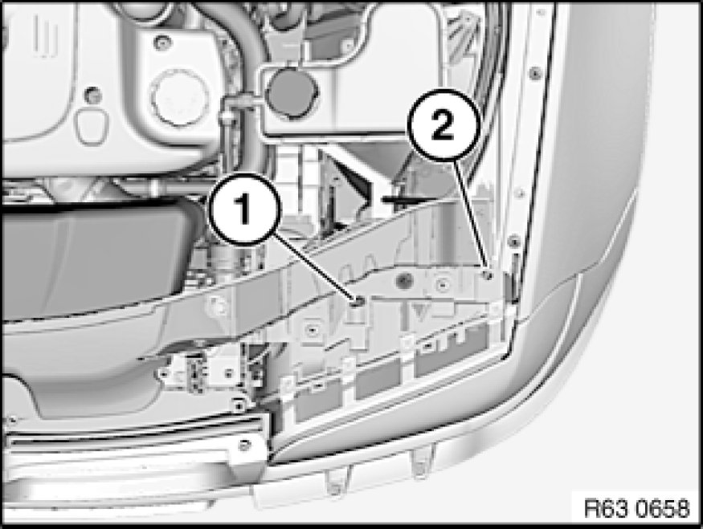

Adjusting Headlights
63 10 004 - Adjusting headlights

Note:
Comply with test preconditions for headlight adjustment Test Requirements for Headlight Vertical Aim Adjustment.

Adjust headlights at adjusting screws (1) and (2).
A definite allocation of adjusting screws is not possible.
1. Adjustment screw primarily for vertical adjustment
2. Adjustment screw primarily for lateral adjustment